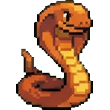

 Fire
FireTap a stage to read its story.
Emberspire is a small brown cobra coiled on warm rock, its wide hood fanned out and its round eyes gleaming with new-fire curiosity. It cannot yet breathe flame but its scales are warm to the touch and radiate gentle heat. In the lava crater's outer rock fields it rides warm updrafts coiled around boulders, swaying its upper body to sense vibrations from deep below. The guardians say Emberspire hatches already knowing three words - the names of the three crater vents - and repeats them softly to itself while it grows.
Field note: Emberspire chooses exactly the same warm boulder to sleep on each night; if moved, it returns within the hour.
Lava Crater. Emberspire and its family are found in the Lava Crater. See everyone who lives there.
Share a Bond Food that matches its types to become friends. Emberspire loves:
A Bond Food is not a trick. It joins your spirit with the Kimuro's spirit, and only when it chooses you.
Print the Kimuro adventure packs: mazes, cards, a board game and Bond Mark medals.
See the printable packs